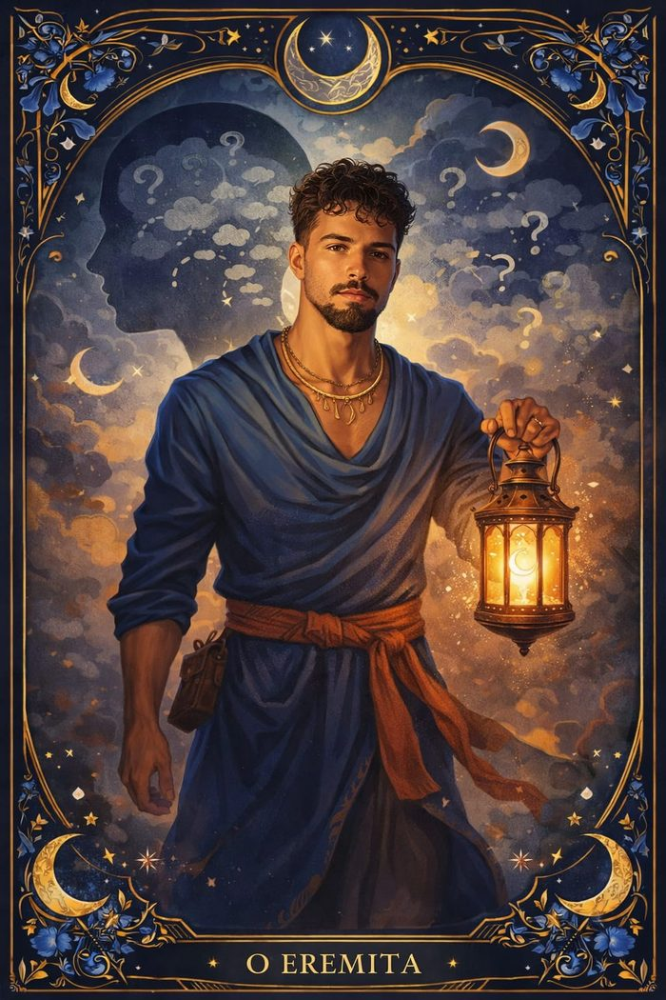
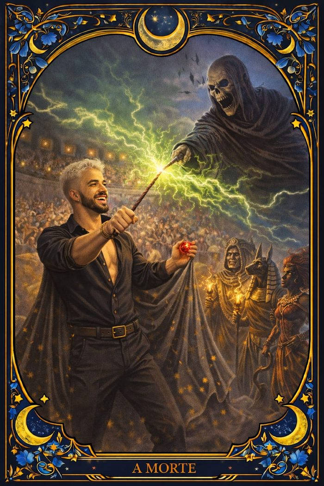
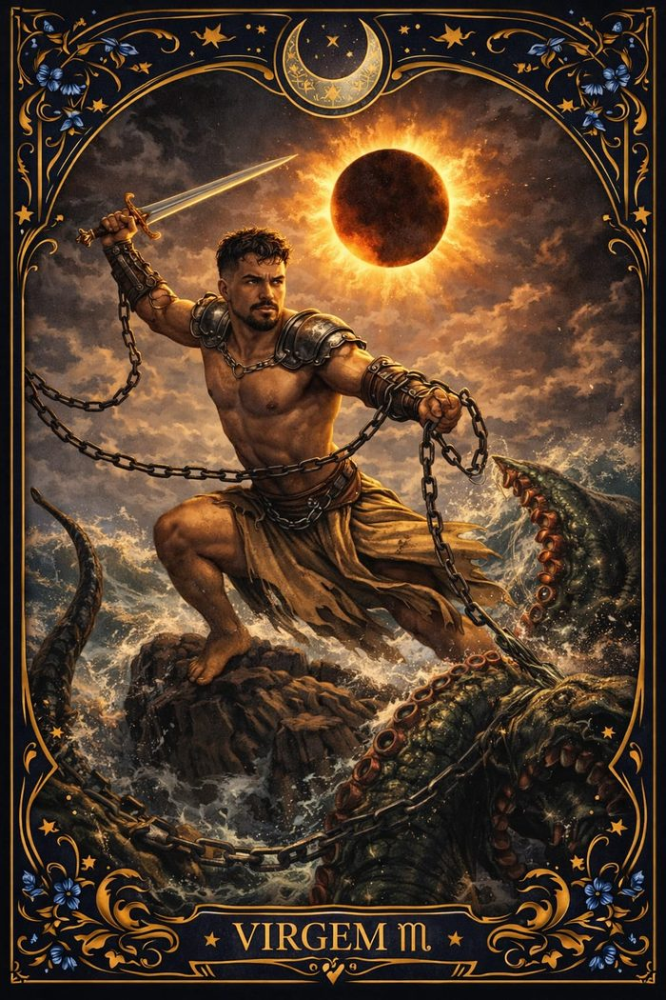
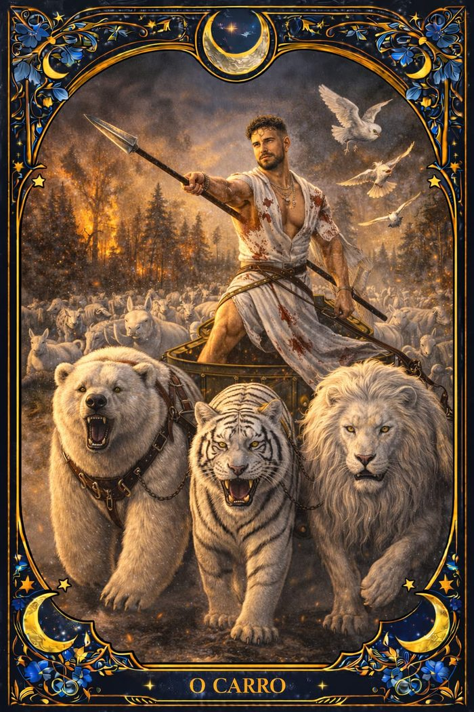
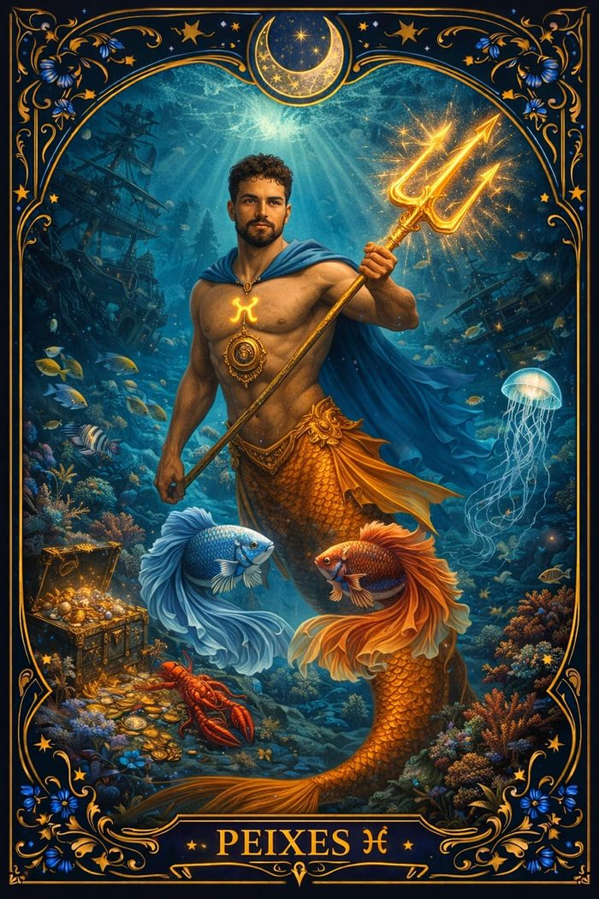
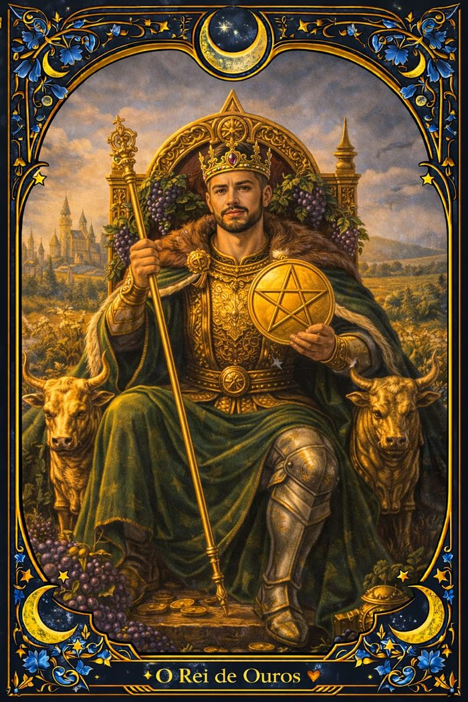

Autoconhecimento
Clareza Interior
Para momentos de introspecção e recomeço. Identifica bloqueios pouco visíveis e ilumina o próximo passo a ser dado.
Consultas individuais de Tarô para quem busca entender o presente, tomar decisões com mais segurança e reconectar-se com a própria intuição — com escuta atenta e total sigilo em cada etapa do atendimento.
Cada consulta une a simbologia do Tarô a uma escuta cuidadosa do seu momento de vida, trazendo direção prática para decisões em amor, carreira e propósito.

Para momentos de introspecção e recomeço. Identifica bloqueios pouco visíveis e ilumina o próximo passo a ser dado.

Indicada para encerramentos e transições. Ajuda a processar o desapego e abrir espaço consciente para o que vem a seguir.

Para quem enfrenta situações travadas ou recorrentes. Aponta o que está no caminho e direções concretas para seguir em frente.

Impulsiona decisões profissionais e pessoais que estão paradas, indicando o momento certo para agir com confiança.

Leitura voltada às relações afetivas, trazendo clareza sobre sentimentos, intenções e o que está por trás do não dito.

Voltada para decisões financeiras e profissionais, trazendo direção para construir segurança material a longo prazo.
"Eu não nasci pronto. Fui moldado pelas quedas."
Passei por ciclos que me desconstruíram: términos que doeram fundo, perdas que silenciaram minha vontade de continuar e períodos de ansiedade em que levantar da cama já era uma vitória. Houve silêncio, dúvida e muitas perguntas sem resposta.
Foi exatamente ali, no fundo, que comecei a despertar.
A espiritualidade não chegou como fuga — chegou como reencontro. Aprendi que a dor também é iniciação, que o fim de um ciclo nem sempre é punição e que sensibilidade não é fraqueza: é dom.
Aprendi a transformar abandono em autoconhecimento.
Traição em discernimento.
Silêncio em estratégia.
E medo em força espiritual.
Meu caminho com as cartas não nasceu da curiosidade — nasceu da vivência. Hoje, quando leio para alguém, não entrego apenas previsões: entrego direção, consciência e clareza para decisões reais.
Hoje sou mais centrado, mais estratégico e mais conectado com a minha intuição. Não sou movido pelo desespero — sou guiado pela clareza.
Intensidade com propósito.
Espiritualidade com responsabilidade.
Intuição com firmeza.
Se você chegou até aqui, talvez não seja coincidência.
Talvez seja um chamado.
Agende sua consulta e descubra como o Tarô pode trazer direção para o que você está vivendo agora — em um atendimento individual, sigiloso e conduzido com cuidado.
Falar no WhatsAppResposta em até 24h · Atendimento 100% online e presencial